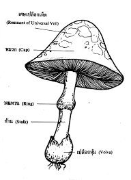

เห็ด เป็นสิ่งมีชีวิตในอาณาจักรฟังไจ (Fungi) ซึ่งต่างจากพืชและสัตว์โดยสิ้นเชิง เนื่องจากเห็ดไม่มีคลอโรฟิลล์จึงไม่สามารถสังเคราะห์แสงได้เอง เห็ดจึงต้องหาอาหารจากการย่อยสลายสารอินทรีย์ในสิ่งแวดล้อม เช่น ซากพืช ซากสัตว์ หรือบางชนิดอาศัยร่วมกับพืช (แบบพึ่งพาอาศัยหรือสมานความสัมพันธ์) เห็ดมีบทบาทสำคัญในระบบนิเวศ เพราะช่วยย่อยสลายสารอินทรีย์ ทำให้สารอาหารถูกหมุนเวียนกลับเข้าสู่ดินและพืชได้อีกครั้ง
โครงสร้างสำคัญของเห็ด หมวกเห็ด (Cap): เป็นส่วนที่เห็นชัดเจน มีรูปร่างและสีสันแตกต่างกันไปตามชนิดของเห็ด หมวกเห็ดทำหน้าที่ปกป้องส่วนที่สร้างสปอร์ ครีบใต้หมวก (Gills): เป็นแผ่นบาง ๆ อยู่ใต้หมวกเห็ด ทำหน้าที่สร้างและปล่อยสปอร์เพื่อขยายพันธุ์ ก้านเห็ด (Stipe): เป็นเส้นใยที่ยึดหมวกเห็ดกับฐานดิน มีความแข็งแรงและยืดหยุ่นช่วยให้เห็ดตั้งตรง โคนก้าน (Volva): เยื่อหุ้มฐานของก้านเห็ดบางชนิด ซึ่งสำคัญในการจำแนกชนิดเห็ด เส้นใย (Mycelium): เป็นเส้นใยเล็ก ๆ ที่อยู่ใต้ดินหรือในซากพืช มีหน้าที่ดูดซึมสารอาหารและขยายพันธุ์ เห็ดบางชนิดมีลักษณะเฉพาะ เช่น มีวงแหวน (Ring) บนก้าน หรือมีกลิ่นพิเศษ ทำให้ช่วยในการจำแนกชนิดได้
รายวิชานี้เหมาะสำหรับผู้ที่สนใจในด้านการเก็บเห็ด การทำอาหารจากเห็ด หรือผู้ที่ต้องการความรู้เพื่อความปลอดภัยในการบริโภคเห็ดป่า รวมทั้งผู้ที่ทำงานด้านเกษตร ป่าไม้ หรือสุขภาพ
